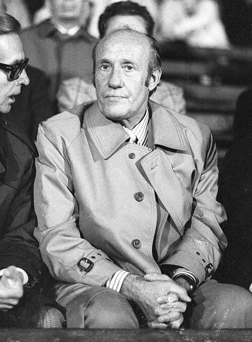

Photo source ↗Magnussen, Friedrich (1914-1987) · CC BY-SA 3.0 de
The profile
Helmut Schön
Helmut Schön coached West Germany through several major tournaments and helped maintain a strong national side across the 1960s and 1970s.
Schön guided West Germany through the 1966 and 1970 World Cups before winning the European Championship in 1972. His teams combined individual talent with a reliable collective structure.
Schön led West Germany to the 1974 World Cup title at home. His team recovered from a first-round loss to East Germany and beat the Netherlands 2–1 in the final.
1974West Germany
Champion
Group A West Germany1 : 0Chile
- Paul BREITNER18′
West Germanyhome
Starting lineup
- Sepp MAIER
- Berti VOGTS
- Paul BREITNER
- Hans Georg SCHWARZENBECK
- Franz BECKENBAUER
- Bernd CULLMANN
- Wolfgang OVERATH
- Uli HOENESS
- Juergen GRABOWSKI
- Jupp HEYNCKES
- Gerd MUELLER
Substitutions
- 75′Bernd HOELZENBEIN on · Wolfgang OVERATH off
Chileaway
Starting lineup
- Leopoldo VALLEJOS
- Rolando GARCIA
- Alberto QUINTANO
- Antonio ARIAS
- Elias FIGUEROA
- Juan RODRIGUEZ
- Francisco VALDES
- Carlos REINOSO
- Guillermo PAEZ
- Carlos CASZELY
- Sergio AHUMADA
Substitutions
- 76′Leonardo VELIZ on · Francisco VALDES off
- 83′Alfonso LARA on · Juan RODRIGUEZ off
Group A West Germany3 : 0Australia
- Wolfgang OVERATH12′
- Bernd CULLMANN34′
- Gerd MUELLER53′
West Germanyhome
Starting lineup
- Sepp MAIER
- Berti VOGTS
- Paul BREITNER
- Hans Georg SCHWARZENBECK
- Franz BECKENBAUER
- Bernd CULLMANN
- Wolfgang OVERATH
- Uli HOENESS
- Juergen GRABOWSKI
- Jupp HEYNCKES
- Gerd MUELLER
Substitutions
- 45+1′Bernd HOELZENBEIN on · Jupp HEYNCKES off
- 67′Herbert WIMMER on · Bernd CULLMANN off
Australiaaway
Starting lineup
- Jack REILLY
- Doug UTJESENOVIC
- Peter WILSON
- Manfred SCHAEFER
- Colin CURRAN
- Ray RICHARDS
- Jimmy ROONEY
- Jimmy MACKAY
- Adrian ALSTON
- Ernie CAMPBELL
- Branko BULJEVIC
Substitutions
- 45+1′Attila ABONYI on · Ernie CAMPBELL off
- 61′Peter OLLERTON on · Branko BULJEVIC off
Group A East Germany1 : 0West Germany
- Juergen SPARWASSER77′
East Germanyhome
Starting lineup
- Juergen CROY
- Lothar KURBJUWEIT
- Bernd BRANSCH
- Konrad WEISE
- Siegmar WAETZLICH
- Gerd KISCHE
- Hans-Juergen KREISCHE
- Reinhard LAUCK
- Juergen SPARWASSER
- Harald IRMSCHER
- Martin HOFFMANN
Substitutions
- 65′Erich HAMANN on · Harald IRMSCHER off
West Germanyaway
Starting lineup
- Sepp MAIER
- Berti VOGTS
- Paul BREITNER
- Hans Georg SCHWARZENBECK
- Franz BECKENBAUER
- Bernd CULLMANN
- Wolfgang OVERATH
- Uli HOENESS
- Heinz FLOHE
- Juergen GRABOWSKI
- Gerd MUELLER
Substitutions
- 68′Horst-Dieter HOETTGES on · Hans Georg SCHWARZENBECK off
- 69′Guenter NETZER on · Wolfgang OVERATH off
Second-phase Group 2 West Germany2 : 0Yugoslavia
- Paul BREITNER39′
- Gerd MUELLER82′
West Germanyhome
Starting lineup
- Sepp MAIER
- Berti VOGTS
- Paul BREITNER
- Hans Georg SCHWARZENBECK
- Franz BECKENBAUER
- Herbert WIMMER
- Wolfgang OVERATH
- Rainer BONHOF
- Gerd MUELLER
- Bernd HOELZENBEIN
- Dieter HERZOG
Substitutions
- 73′Uli HOENESS on · Herbert WIMMER off
- 78′Heinz FLOHE on · Bernd HOELZENBEIN off
Yugoslaviaaway
Starting lineup
- Enver MARIC
- Ivan BULJAN
- Enver HADZIABDIC
- Drazen MUZINIC
- Josip KATALINSKI
- Branko OBLAK
- Jovan ACIMOVIC
- Ivica SURJAK
- Dragan DZAJIC
- Danilo POPIVODA
- Stanislav KARASI
Substitutions
- 84′Ilija PETKOVIC on · Dragan DZAJIC off
- 84′Jurica JERKOVIC on · Branko OBLAK off
Second-phase Group 2 West Germany4 : 2Sweden
- Wolfgang OVERATH51′
- Rainer BONHOF52′
- Juergen GRABOWSKI76′
- Uli HOENESS89′ · pen.
- Ralf EDSTROM24′
- Roland SANDBERG53′
West Germanyhome
Starting lineup
- Sepp MAIER
- Berti VOGTS
- Paul BREITNER
- Hans Georg SCHWARZENBECK
- Franz BECKENBAUER
- Wolfgang OVERATH
- Uli HOENESS
- Rainer BONHOF
- Gerd MUELLER
- Bernd HOELZENBEIN
- Dieter HERZOG
Substitutions
- 64′Juergen GRABOWSKI on · Dieter HERZOG off
- 83′Heinz FLOHE on · Bernd HOELZENBEIN off
Swedenaway
Starting lineup
- Ronnie HELLSTROM
- Jan OLSSON
- Kent KARLSSON
- Bjorn NORDQVIST
- Jorgen AUGUSTSSON
- Ove GRAHN
- Bo LARSSON
- Staffan TAPPER
- Conny TORSTENSSON
- Ralf EDSTROM
- Roland SANDBERG
Substitutions
- 32′Inge EJDERSTEDT on · Bo LARSSON off
Second-phase Group 2 West Germany1 : 0Poland
- Gerd MUELLER76′
West Germanyhome
Starting lineup
- Sepp MAIER
- Berti VOGTS
- Paul BREITNER
- Hans Georg SCHWARZENBECK
- Franz BECKENBAUER
- Wolfgang OVERATH
- Uli HOENESS
- Rainer BONHOF
- Juergen GRABOWSKI
- Gerd MUELLER
- Bernd HOELZENBEIN
Substitutions
- No substitutions
Polandaway
Starting lineup
- Jan TOMASZEWSKI
- Antoni SZYMANOWSKI
- Jerzy GORGON
- Wladyslaw ZMUDA
- Adam MUSIAL
- Kazimierz DEYNA
- Henryk KASPERCZAK
- Zygmunt MASZCZYK
- Grzegorz LATO
- Robert GADOCHA
- Jan DOMARSKI
Substitutions
- 80′Leslaw CMIKIEWICZ on · Zygmunt MASZCZYK off
- 80′Kazimierz KMIECIK on · Henryk KASPERCZAK off
Final West Germany2 : 1Netherlands
- Paul BREITNER25′ · pen.
- Gerd MUELLER43′
- Johan NEESKENS2′ · pen.
West Germanyhome
Starting lineup
- Sepp MAIER
- Berti VOGTS
- Paul BREITNER
- Hans Georg SCHWARZENBECK
- Franz BECKENBAUER
- Wolfgang OVERATH
- Uli HOENESS
- Rainer BONHOF
- Juergen GRABOWSKI
- Gerd MUELLER
- Bernd HOELZENBEIN
Substitutions
- No substitutions
Netherlandsaway
Starting lineup
- Jan JONGBLOED
- Ruud KROL
- Wim RIJSBERGEN
- Wim SUURBIER
- Arie HAAN
- Wim VAN HANEGEM
- Wim JANSEN
- Johan NEESKENS
- Johan CRUYFF
- Rob RENSENBRINK
- Johnny REP
Substitutions
- 45+1′Rene VAN DE KERKHOF on · Rob RENSENBRINK off
- 68′Theo DE JONG on · Wim RIJSBERGEN off